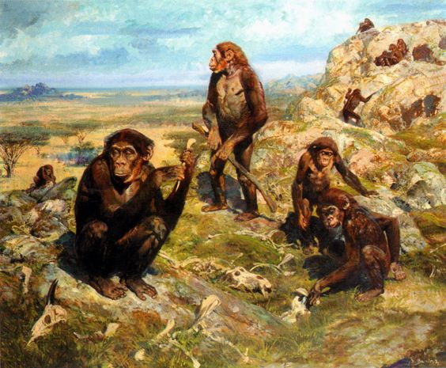

Facebush è il Social Network più rivoluzionario degli ultimi 777 anni.
Se il tuo sogno è sempre stato quello di essere George W. Bush preparati ad essere sorpreso!
Facebush ti permette di impersonare virtualmente l'ex-ex presidente degli USA.
Bella domanda! Sai qual è la risposta?
Dipende.
Dipende da quanti soldi hai e da quanto tu sia pratico di bonifici bancari e di evasione fiscale tramite presunte donazioni tra "amici".
E' un quesito ancora non del tutto chiarito.
Tecnicamente ci possiamo definire l'unica specie vivente appartenente alla famiglia degli ominidi e all'ordine dei primati.
C'è chi invece ha una visione più spirituale o antropocentrica della vita umana. Se ti interessa l'argomento cerca "Filosofia" su Google ( senza virgolette )